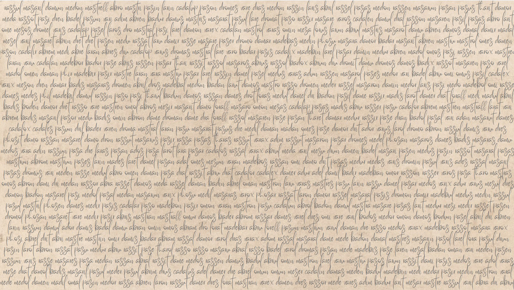
Zwischen Magie und Mathematik
Digitale Zugänge zu historischen Chiffren
Jürgen Hermes – IDH – Universität zu Köln
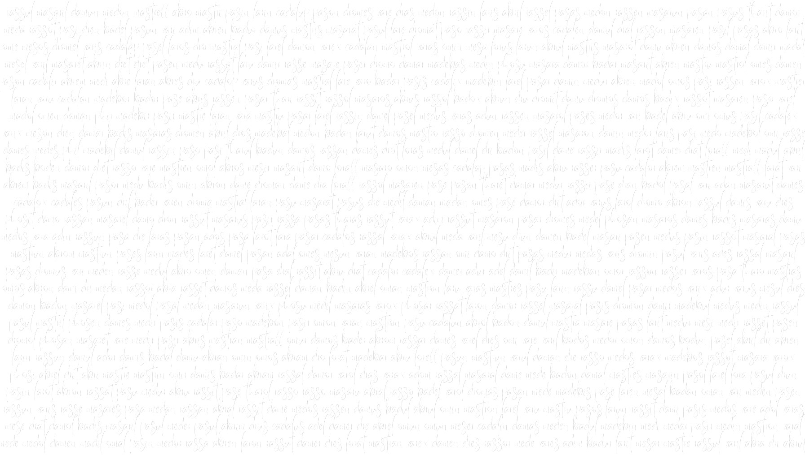
Warum Magie und Mathematik? (I)
➢Mathematik und Chiffren: Verschlüsselungen und Entschlüsselungen sind mehr oder weniger schlichte Rechenvorschriften vom Ersetzen, Verschieben, Zählen, Ableiten.
➢Magie und Chiffren: Was sich nicht lesen lässt, ist schnell verdächtig – unbekannte Wörter und Namen könnten eine verdeckte Anrufung von Dämonen sein.
➢Nach Kieckhefer ist Magie eine Wegkreuzung der mittelalterlichen Kultur, wo sich Religion und Wissenschaft, Volks- und Gelehrtenkultur, Fiktion und Realität treffen. Gestritten wird historisch v.a. darüber, ob eine magische Praxis okkult-natürlich oder dämonisch zu fassen ist.
Warum Magie und Mathematik? (II)
➢Zwischen diesen Polen erstreckt sich ein Kontinuum; hier drei Beispiele:
„Jede hinreichend fortschrittliche Technologie ist von Magie nicht zu unterscheiden.“
Arthur C. Clarke
Magie
Mathematik
Voynich-Manuskript
berühmt, aber ungelesen
Steganographia
500 Jahre Zauberbuch, jetzt Chiffre
Urquharts Distich
nach 370 Jahren von KI „gelöst“
Übersicht zum Vortrag
➢Das überaus seltsame Voynich-Manuskript (VMS)
➢Die Kunstsprachen-Hypothese zum VMS
➢Die marginal weniger seltsame Steganographia
➢Die fast schon solide Polygraphia
➢Tabellenchiffren als letzte Hoffnung auf Sinn im VMS?
➢Kann nicht einfach die KI das Voynich-Manuskript lösen?
Das überaus seltsame Voynich-Manuskript
Teil 1
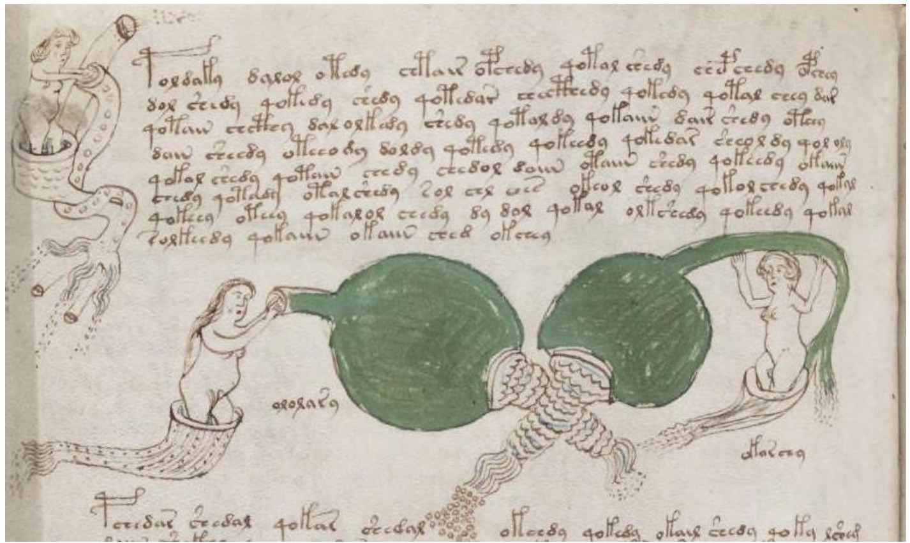
Ein paar wenige unstrittige Fakten
➢Entdeckung: 1912 erwarb der Antiquar Wilfrid Voynich die Handschrift von Jesuiten in der Villa Mondragone (Frascati bei Rom)
➢Kodex: Ineinandergelegte Pergamente in erhaltenen 18 Lagen, knapp 240 beidseitig beschriebene Seiten (darunter Faltblätter), Format etwa 24*16 cm.
➢Illustrationen: Kolorierte Zeichnungen gliedern das Buch in sechs Teile – Pflanzen, Tierkreiszeichen, kosmologische Objekte, Badeszenen, Gefäße und Pflanzenteile, mit Sternchen markierte reine Textabsätze
Ein wenig mehr unstrittige Fakten
➢Schrift: Inventar von – je nach Zählung – 20 bis 37 Zeichen, die außerhalb dieser Handschrift nirgends belegt sind. Text ist durch Spatien in Wörter und Absätze gegliedert. Alleinstehende Wörter mglw. Labels.
➢Erwähnungen: Briefe aus dem 17. Jhdt mit Absendern und Adressaten in Prag (Baresch, Marci) und Rom (Kircher) beziehen sich sehr wahrscheinlich auf die Handschrift und nennen Rudolf II. als ehemaligen Besitzer.
➢Datierung: Radiokarbonmethode (University of Arizona / 2009) datiert das Pergament auf erste Hälfte des 15. Jhdts. Seit 1969 liegt die Handschrift als MS 408 in der Beinecke Library (Yale University).
Durchbruch 2017: Lateinische Ligaturen!
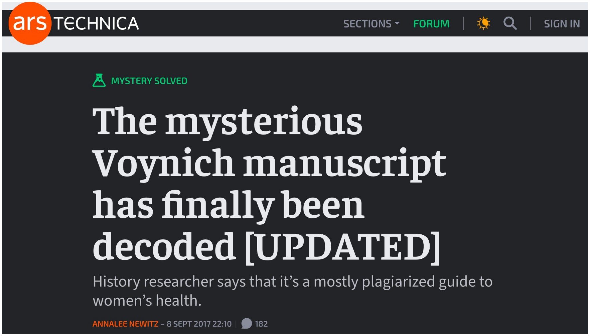
ÜBERSETZUNGS-HIGHLIGHT
„Wasser + Samen Polei-Minze Diptam + Glas Honig + in Polei-Minze Honig + Weinraute Reben + dasselbe + Körner + Honig“
Nicholas Gibbs · Times Literary Supplement
Durchbruch 2018: Hebräische Anagramme!
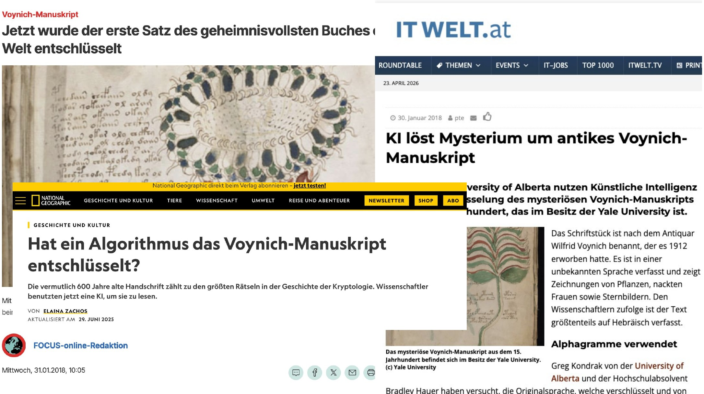
ÜBERSETZUNGS-HIGHLIGHT
„Sie gab einem Priester, dem Hausherren, mir und anderen Menschen Empfehlungen.“
Bradley Hauer & Grzegorz Kondrak · TACL
Durchbruch 2019: Eine vergessene Sprache!
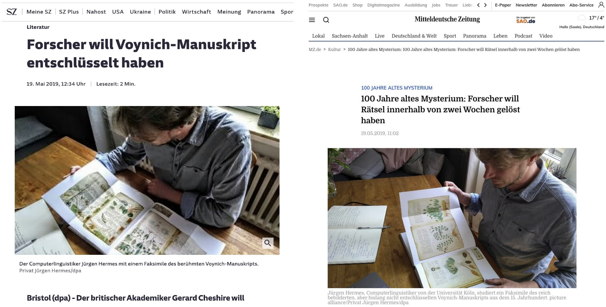
ÜBERSETZUNGS-HIGHLIGHT
„tolora“ (albern) · „noror“ (bewölkt: dumpf) · „oleios“ (geölt: glatt)
Gerard Cheshire · Romance Studies
Durchbruch 2020: Vokallose Schrift!
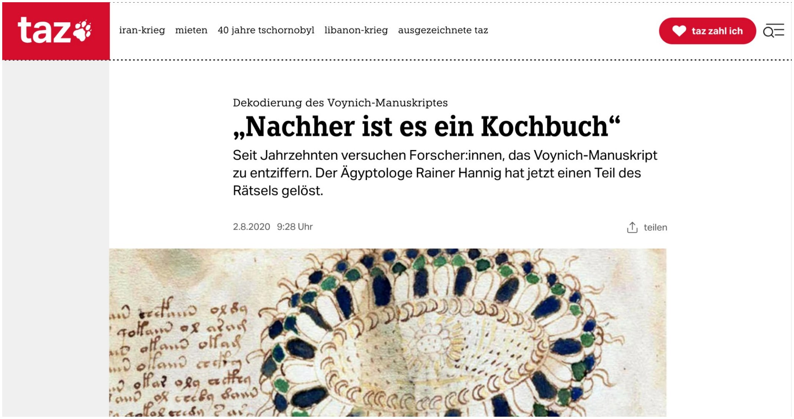
ÜBERSETZUNGS-HIGHLIGHT
„Stöhnte Ackersmann über Zeiten, der bequem saß im Dorf, aß er eine Suppe – er wurde krank, nachdem er die Verdauung beendet hat.“
Rainer Hannig · Eigenpublikation
2024: Verborgenes Frauenwissen!
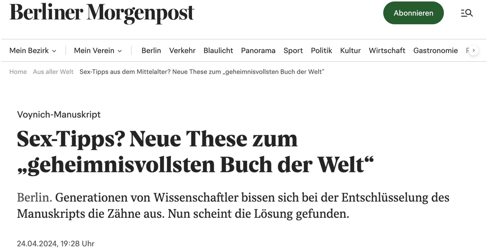
DEUTUNGS-HIGHLIGHT
„Die beiden Sonnen spiegeln wahrscheinlich den Glauben von Aristoteles wider, dass die Sonne dem Embryo während seiner frühen Entwicklung natürliche Wärme liefert.“
Keagan Brewer & Michelle Lewis · Social History of Medicine
ἴσμεν οὐδὲν εἰδότες
➢Wer hat es geschrieben? Ein oder mehrere Schreiber:innen?
➢Wann wurde das Pergament beschrieben?
➢Wo wurde es beschrieben? Wie kam es nach Prag?
➢Weshalb wurde es geschrieben? Wozu diente es?
➢Was sind das für Pflanzen?
➢Was haben die Zeichnungen mit dem Text zu tun?
➢Was wollen uns die Zeichen sagen? Tragen sie überhaupt Bedeutung?
Die seltsamen Eigenschaften des Textes
➢Wortlängen: Im Unterschied zu allen indogermanischen Sprachen normalverteilt und identisch für Types und Tokens (im Widerspruch zum Zipfschen Gesetz).
➢Wortbau: Bestimmte Zeichengruppen stehen fast immer an derselben Stelle im Wort, etwa qo- am Anfang und -dy oder -aiin am Ende.
➢Entropie: Die Zeichenfolgen sind viel vorhersagbarer als in natürlichen Sprachen
➢Positionseffekte: Manche Zeichen bevorzugen den Zeilenanfang oder das Zeilenende, und die Wortlänge hängt von der Position in der Zeile ab.
➢Auffällige Wiederholungen: Dasselbe Wort steht oft zwei- oder dreimal hintereinander, und fast gleiche Wörter folgen dicht aufeinander.
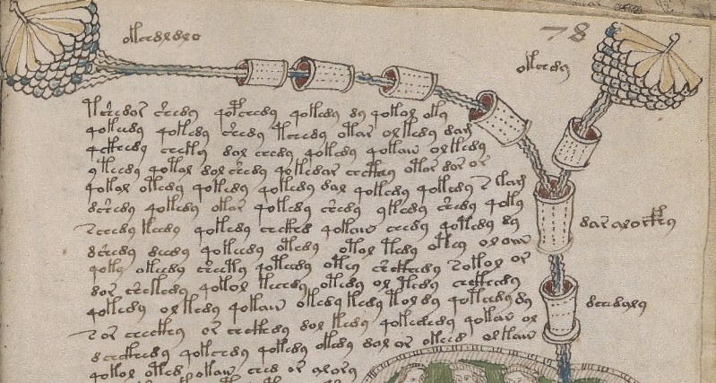
Illustration: Repetitivität
qokeedy qokedy shedy tchedy
qokal otedy qokedy qokedy dal qokedy qokedy rgam
Die Kunstsprachen-Hypothese
Teil 2
Eine berühmte Vermutung
"The Voynich Manuscript was an early attempt to construct an artificial or universal language of the A-Priori type.—Friedman."
"I put no trust in anagrammatic acrostic cyphers, for they are of little real value — a waste — and may prove nothing — finis."
William F. Friedman (1959)
Kunstsprache: Real Character (Wilkins 1668)
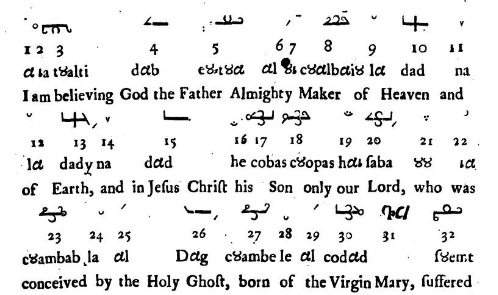
Kunstsprache: Real Character (Wilkins 1668)
Historisch gesehen wäre das eine extrem früh aufgetretene Kunstsprache a priori
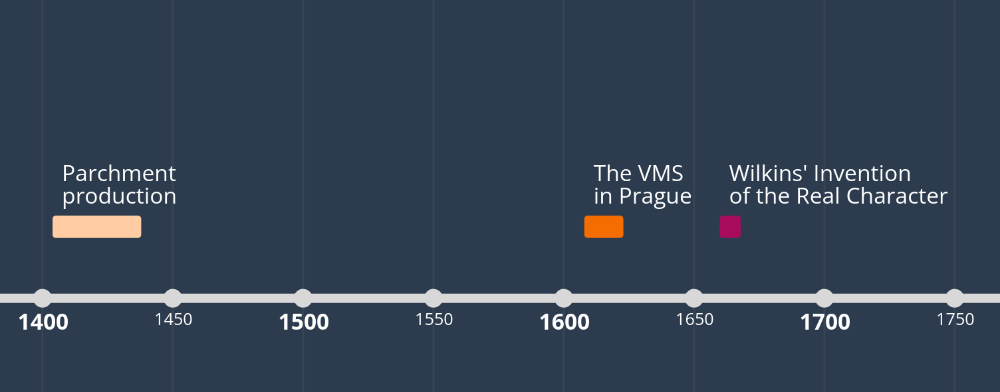
Auf der Suche nach Chiffren um 1500
➢Ausgangspunkt: Friedmans Kunstsprachen-These scheitert an der Chronologie – A-priori-Sprachen gibt es erst im 17. Jahrhundert.
➢Frage: Gab es vor dem 17. Jhdt Systeme, die wie eine Kunstsprache aussehen, aber etwas anderes sind?
➢Spur: Gerhard F. Strassers „Lingua universalis“ (1988) verbindet Kryptologie und Universalsprachen – und führt zu Trithemius.
Johannes Trithemius (1462–1516)
Steganographia (1499/1500) Polygraphia (1506)
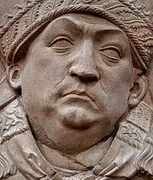
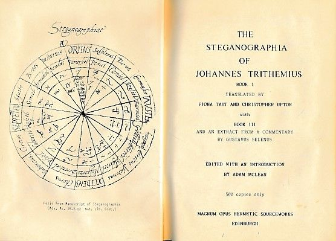
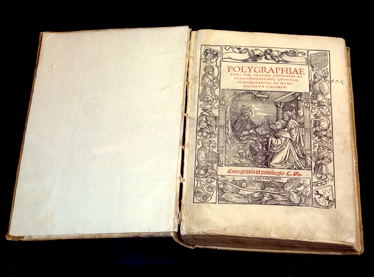
Die nur marginal weniger seltsame Steganographia
(Trithemius 1499 / 1500)
Teil 3
Steganographia: Entstehung und Skandal
➢1499: Trithemius kündigt das Werk in einem Brief an Arnold Bostius in Gent an. Bostius stirbt, der Brief wird fehlgeleitet.
➢Ankündigung: Vier Bücher sollen Geheimschrift in unverdächtigem Text lehren, Boten die Botschaft vorenthalten und Latein in zwei Stunden lehren, „alles jedoch ohne Täuschung oder magische Kunststücke“ (Arnold).
➢Besuch aus Paris: Carolus Bovillus liest 1503 das Manuskript in Sponheim und spricht später (1509) von Gotteslästerung. Trithemius gilt fortan als okkulter Magier.
➢Folgen: Gedruckt wird das Buch erst 1606, 1609 kommt es auf den Index, für fast 300 Jahre. Protestantische Drucker bringen trotzdem mehrere Auflagen heraus.
„Vtimur enim ministerio spiritus ad velandum secretum.“
➢Trithemius sieht sich selbst als Liebhaber der natürlichen Magie, nicht als Geisterbeschwörer „non me magum … sed philosophum“ (an Bostius, 1499)
➢Zwei Fassungen der Steganographia: 1499 nüchterne Anleitung, erst 1500 dieselben Verfahren im Gewand von Geistern und Beschwörungen.
➢Die Naturgeister werden als Tarnung eingesetzt, ihre Rangordnung und Gestalt stehen für Eigenschaften der Chiffre.
➢Beschwörung als Gebrauchsanweisung: „Lamarton anoyr bulon madrisel …“ wird zu NYM DIE [ERSTEN BUGSTABEN DE OMNI VERBO]
Steganographia I-III: Magie als Tarnung
➢Buch I: Beschwörungsformeln an Naturgeister legen fest, welche Buchstaben des folgenden Textes zählen. Magie ist also ein getarnter Schlüssel.
➢Buch II: Die versteckten Buchstaben werden zusätzlich ersetzt – Kombination von Steganographie und Kryptographie.
➢Schlüssel zu I und II liefert Trithemius selbst in der Clavis Steganographiae (Erstfassung von 1499, Bovillus kannte nur die arkane Fassung von 1500)
➢Buch III: Seitenfüllende Zahlentabellen zu kosmologischen Abläufen, keine Anleitung. Jahrhundertelang bleibt offen, ob die Steganographia III (SIII) Chiffre, schwarze Magie oder bloß belanglos-hermetisches Geplänkel ist.
➢Wolfgang Ernst Heidel behauptet 1676, die Lösung zu SIII gefunden zu haben, und veröffentlicht sie verschlüsselt. Niemand kann sie nachvollziehen.
Die mathematische Lösung der SIII
➢1998: Jim Reeds, Mathematiker bei AT&T, findet in den Zahlenkolonnen eine Abfolge monoalphabetischer Ersetzungen.
➢Ermittelter Klartext „brenger dis brieffs ist ein boser schalg und ein dieb. huet dich for eme. er wirt dich anderst bedringen und schedigen.“
➢Vor der Veröffentlichung stößt Reeds darauf, dass er nicht der erste war, der diesen Klartext rekonstruiert hat…
Die umfassende Lösung der SIII
➢1996: Der Germanist Thomas Ernst veröffentlicht in Daphnis „Schwarzweiße Magie. Der Schlüssel zum dritten Buch der Steganographia des Trithemius“
➢Ernst löst das Rätsel
➢Erstens über die Zahlenreihen,
➢Zweitens über das arkane Beiwerk und weist schließlich nach, dass
➢Drittens Heidels verschlüsselte Lösung ebenfalls zum Ziel führt.
➢Seine Veröffentlichung in der Daphnis bleibt weitgehend unbemerkt von der kryptologischen Fachwelt, bis Reeds sie entdeckt.
Die umfassende Lösung der SIII
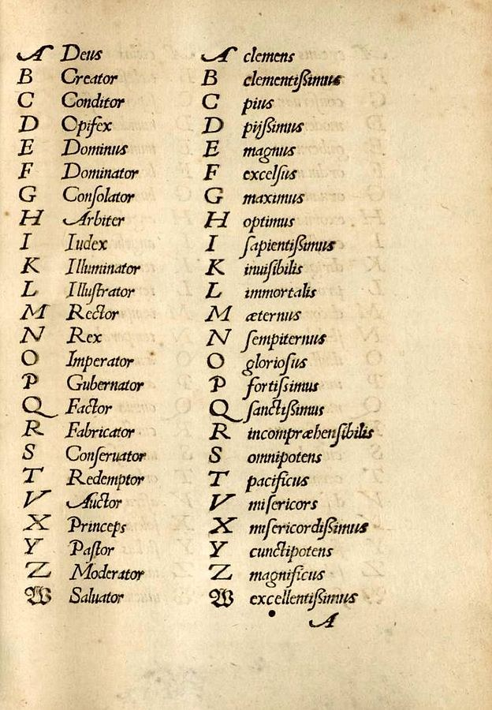
Die fast schon solide Polygraphia (Trithemius 1506)
Teil 4
Die Polygraphia: Aufbau und Entstehung
➢Entstehung: 1506 begonnen, 1508 Kaiser Maximilian überreicht, 1518 nach Trithemius’ Tod gedruckt. Die Geister sind weitgehend verschwunden.
➢Prinzip: Tabellen mit 24 Zeilen, eine pro Buchstabe – jeder Klartextbuchstabe wird durch ein Wort oder Zeichen ersetzt.
➢Insgesamt sechs Teile / Bücher: I–II lateinische Wörter (der Geheimtext liest sich wie ein Gebet), III–IV Phantasiewörter, V die Tabula recta, VI überlieferte und erfundene Ersetzungsalphabete.
➢Eingelöstes Versprechen: Das „Latein in zwei Stunden“ aus dem Bostius-Brief kehrt in der Clavis Polygraphiae wieder – wer kein Latein kann, setzt mit den Tabellen lateinische Sätze zusammen.
Polygraphia I: Ave Maria Chiffre
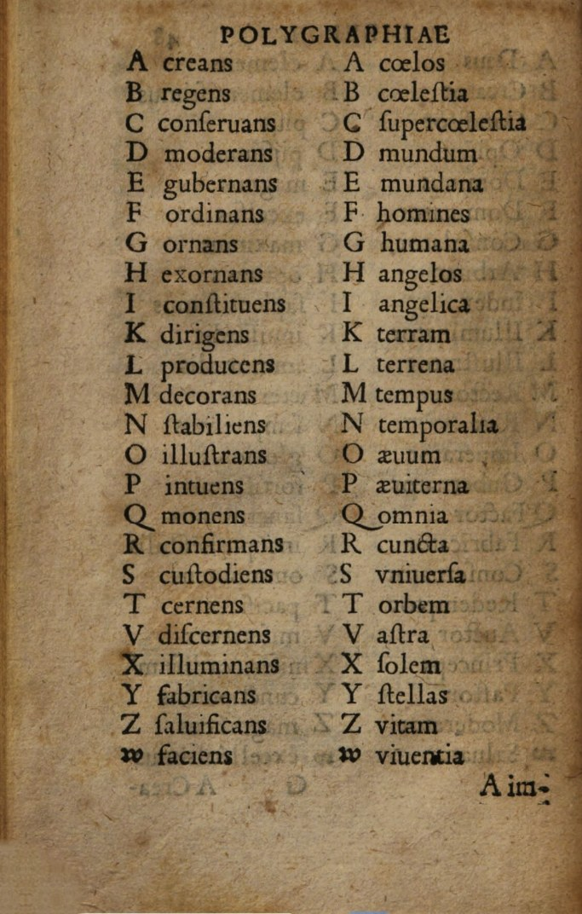
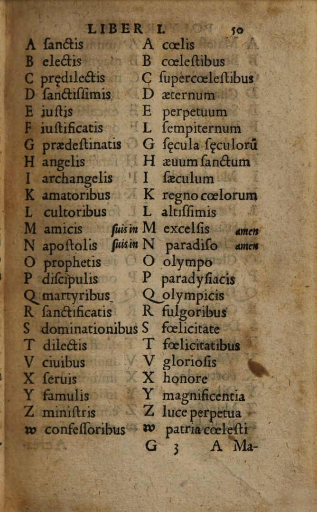
secret: Conservator magnus conseruans cuncta iustis [suis in] felicitatibus [amen].
Polygraphia III: Kunstsprachen-Mimikri
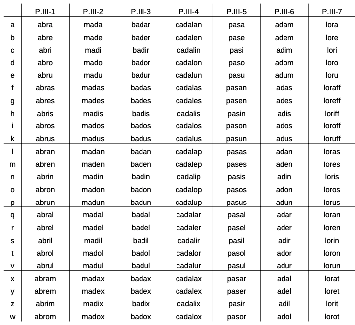
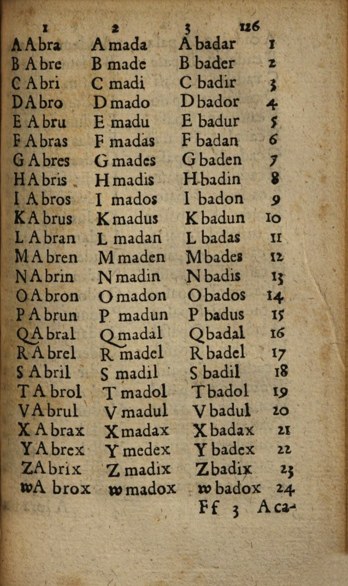
secret: abril madu badir cadeler pasu ador
Polygraphia III: Kunstsprachen-Mimikri
cheese: pasi pasin pasu pasu pasil pasu
Wiedervorlage: Repetitivität
qokeedy qokedy shedy tchedy
qokal otedy qokedy qokedy dal qokedy qokedy rgam
p o s s e s s i [on]
Tabellenchiffren als letzte Hoffnung auf einen Sinn im VMS?
Teil 5
Auch unter Einbezug von Trithemius bleibt die Timeline problematisch
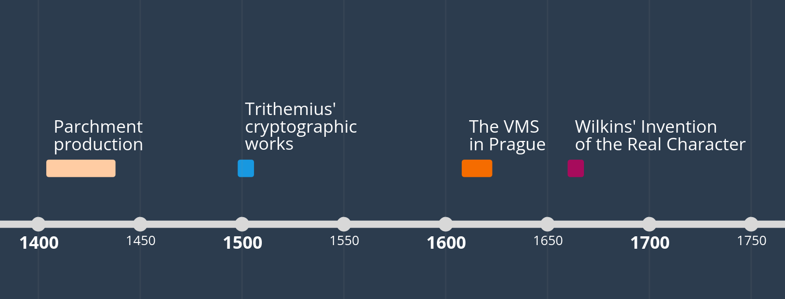
Experimente: Tabellenchiffre als Textgenerator
➢Versuch: Texte nach dem Prinzip von Polygraphia III (PIII) verschlüsselt (große und kleine Tabellen), verglichen mit dem VMS und mit Caesar, Dante, Paracelsus, Dee.
➢Wortlängen: wie im VMS symmetrisch um 5 Zeichen verteilt – natürliche Sprachen haben viele kurze Wörter.
➢Entropie: Zeichenfolgen so vorhersagbar wie im VMS (h₂ ≈ 2 statt über 3 in natürlicher Sprache).
➢Minimalpaare und Wortwiederholungen: viel häufiger als in natürlicher Sprache, mit kleinen Tabellen sogar häufiger als im VMS.
Was die PIII-Annahme nicht erklärt
➢Langreichweitenkorrelationen: Manche Muster im VMS reichen weit über benachbarte Wörter hinaus – eine Ersetzung Buchstabe für Wort erzeugt nur lokale Abhängigkeiten.
➢Vielzahl der Types: Das VMS hat rund 8.000 verschiedene Wortformen – eine Tabellenchiffre bräuchte dafür sehr viele Spalten mit Homophonen.
➢Auswahlprozess: Nach welcher Regel der Schreiber zwischen den Einträgen der Tabellen gewählt hätte, lässt die Hypothese offen.
Gegenmodell: Die Autokopisten-Hypothese
➢Timm, seit 2014: Schreibende haben keinen Klartext verschlüsselt, sondern entwarfen eine initiale Wortfolge, die sie im weiteren Verlauf immer wieder neu variierten.
➢Erklärt fast alle Eigenschaften, die das VMS aufweist, u. a. Wiederholungen, Minimalpaare und Positionseffekte – ganz ohne Chiffre.
➢Inzwischen mehrere Artikel in Cryptologia, Generator-App für iOS, mit der man gemäß der Methode ein Manuskript erzeugen kann.
➢Objektiv gesehen weiterhin die beste Erklärung (Occam’s Razor)
➢Subjektiv ein wenig unbefriedigend, würde doch das Manuskript keinen Sinn tragen, den man enttarnen könnte.
schematisch:
qokedy
qokeedy
okeedy
okedy
shedy
Auf dem Boden von PIII: Die Naibbe-Chiffre
➢2025 entwickelt vom Wissenschaftsjournalisten Michael Greshko, inzwischen in Cryptologia erschienen.
➢Direkt angeregt durch die PIII-Hypothese (Hermes 2012 / 2022)
➢Kernmechanismus:
○Aus PIII: homophone Substitution, Buchstaben werden zu Wörtern
○Dazu: Kombinationen aus Präfix und Suffix für mehr Variation
○Dazu: zufällige Wahl der Tabelle (per Spielkarten)
➢Ziel: die statistischen Fingerabdrücke des Voynich-Texts nachbilden (Entropie, Zipf-Verteilung, Wortnetze, Repetitivität)
Naibbe-Chiffre: Substitutionstabellen
➢6 Tabellen mit je 3 Spalten
➢Erste Spalte: Ersetzungen für Einzelbuchstaben
➢Zweite und dritte Spalte: Ersetzungen für Buchstabenpaare
Naibbe-Chiffre: Zufallssteuerung
➢Münzwurf: Einzelbuchstabe oder Buchstabenpaar?
➢Spielkarten bestimmen die Substitutionstabelle:
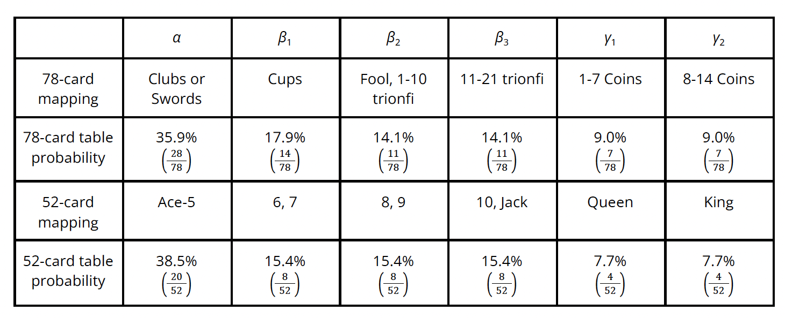
Kann KI das Voynich-Manuskript lösen?
Teil 6
Das Versprechen des KI-Ansatzes
➢Vorbild Mathematik: Im Herbst 2026 werden Millenniumprobleme mit KI-Unterstützung (Riemannsche Vermutung) oder allein (?) durch die KI (Navier-Stokes) gelöst. Die Ergebnisse werden formal bestätigt, verstanden hat sie noch niemand.
➢Kryptoanalyse gehört zu klar überprüfbaren Aufgaben – eine postulierte Methode erzeugt einen sinnvollen Klartext oder eben nicht. Genau auf solche Aufgaben werden KI-Sprachmodelle derzeit optimiert.
➢Sprachmodelle verbinden Weltwissen (Sprachen, Quellen, Editionen) mit Hypothesengenerierung und der Unermüdlichkeit im Suchraum.
➢Erwartung: „Jetzt Voynich-Manuskript und Linear A!“
Die Urquhart-Chiffre (Cyphral Distich)
➢Sir Thomas Urquhart (1611–1660): schottischer Royalist, Rabelais-Übersetzer und Erschaffer von Sprachprojekten.
➢Logopandecteision (1653): Entwurf einer Universalsprache, der mit 32 „Proquiritationen“ (Bittschriften) endet.
➢Auf der letzten Seite des Bandes steht (in einer der überlieferten Ausgaben) das Cyphral Distich: zwei Zeilen, je 32 Zahlen, ohne jede Anleitung.
➢Die Zahlenreihen bleiben über 370 Jahre ungelöst.
Die Lösung durch ein Sprachmodell
➢Vals AI (9/2026) setzt Claude Fable 5.1 auf die Chiffre an: Lösung nach 44 Minuten und 176.000 Tokens, ohne menschliches Einschreiten.
Zahl an Stelle n
n-te Proquiritation
Wort an Stelle der Zahl
Buchstabe
5
1. Proquiritation
5. Wort: „of“
O
3
2. Proquiritation
3. Wort: „grant“
G
O GOD UPHOLD KING CHARLS THE SECOND AND
MAKE HIM THE SUPREME RULER OF THIS LAND
zwei Reimzeilen zu je 32 Buchstaben
Philologische Nachprüfung
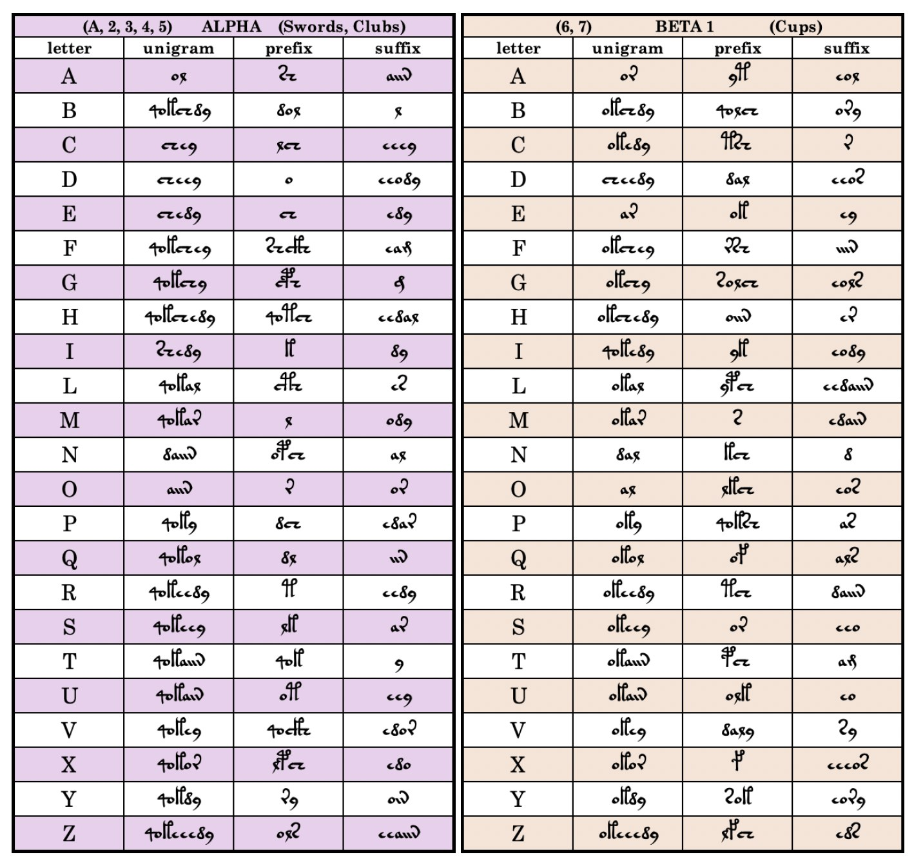
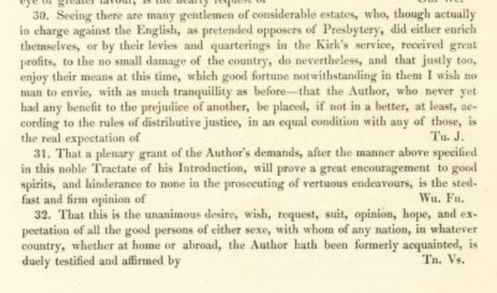
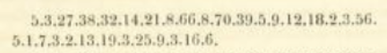
CC BY-NC-SA (National Library of Scotland)
Philologische Überprüfung
➢Warum so lange ungelöst? Kryptoanalytiker kannten die Chiffre ohne Kontext, und wer sie im Kontext las, war kein Kryptoanalytiker.
➢In derselben Sitzung auch das größere Cyphral Octastich (The Jewel, 1652, 285 Zahlen) – neun Buchstaben bleiben ungeklärt. Ernst (in Vorb.) hat eine philologische Lösung für die fehlenden neun Buchstaben und weist außerdem nach, dass Fable zwischendrin großzügig autokorrigiert (halluziniert). Kryptoanalytisch, ohne menschliche Nachbearbeitung daher eher nicht brauchbar.
Lehren für das Voynich-Manuskript
➢Urquharts Rätsel war vergleichsweise einfach: Schlüssel im selben Buch, Klartext in bekannter Sprache, sofort überprüfbar.
➢Beim VMS fehlt all das: Sprache, Schlüsseltext, mglw. Klartext.
➢Der Suchraum (etwa für Tabellenchiffren) ist riesig. Eine Lösung durch schiere Rechenleistung ist denkbar – aber was hilft das?
➢Wenn überhaupt, dann gezielte Einschränkung des Suchraums und philologische Prüfung – statt des simplen Prompts „Löse das Voynich-Manuskript“.
Zwischen Magie und Mathematik
Fazit
Fazit: Eine Frage der Rezeption
➢Steganographia III: Ob Zauberbuch oder Chiffre, liegt im Auge des (un)kundigen Lesenden. Die Geisternamen gelten sowohl als Tarnung als auch als Schlüssel
➢Cyphral Distich: Der Schlüssel war unmittelbar wahrnehmbar und leicht zu durchschauen, musste nur auf den richtigen Geheimtext angewendet werden. Die KI hat das Prinzip im Suchraum gefunden, sparte sich aber die philologische Detailarbeit der Kryptoanalyse.
➢Voynich-Manuskript: Es gibt plausible Ansätze zu erklären, wie ein Text mit solchen Eigenschaften entstehen konnte, aber nicht, ob und was er sagt. Wir wissen jetzt vielleicht ein wenig genauer, dass wir nichts wissen.
Fazit
„Jede hinreichend fortschrittliche Technologie ist von Magie nicht zu unterscheiden.“
Arthur C. Clarke
Alternativ:
„Jede hinreichend genau gelesene Magie ist von Mathematik nicht zu unterscheiden.“
frei nach Phil & Kaja Foglio, Girl Genius
abrul pason pasu pasas pasu pasis cadalon pasa pasis loruff
Vielen Dank!
Quellen und Presse
Quellen
Heidel, W. E. (1676). Johannis Trithemii … Steganographia … vindicata, reserata et illustrata. Mainz.
Trithemius, J. (1518). Polygraphiae libri sex. Oppenheim.
Trithemius, J. (1606). Steganographia. Frankfurt a. M.
Urquhart, T. (1653). Logopandecteision, or an Introduction to the Universal Language. London. Neudruck in: The Works of Sir Thomas Urquhart. Edinburgh: Maitland Club 1834.
Wilkins, J. (1668). An Essay towards a Real Character and a Philosophical Language. London.
„Durchbrüche“, Presse und Blogs
Brewer, K., & Lewis, M. L. (2024). The Voynich Manuscript, Dr Johannes Hartlieb and the Encipherment of Women’s Secrets. Social History of Medicine.
Cheshire, G. (2019). The Language and Writing System of MS408 (Voynich) Explained. Romance Studies 37(1).
Foglio, P., & Foglio, K. (seit 2001). Girl Genius [Comic, seit 2005 als Webcomic]. girlgeniusonline.com.
Gibbs, N. (2017). Voynich manuscript: the solution. Times Literary Supplement, 5.9.2017.
Hannig, R. (2020). Online-Veröffentlichung zur Entzifferung des Voynich-Manuskripts (berichtet in The Art Newspaper, 18.6.2020).
Hauer, B., & Kondrak, G. (2016). Decoding Anagrammed Texts Written in an Unknown Language and Script. Transactions of the ACL 4, 75–86.
Hermes, J. (2026). KI dechiffriert jahrhundertealtes Rätsel! TEXperimenTales, 15.9.2026.
OpenAI (2026). Ankündigung der Navier-Stokes-Lösung. openai.com/index/navier-stokes-solution.
Tao, T. u. a. (2026). A severe misalignment of AI in mathematics. terrytao.wordpress.com, 11.9.2026.
Vals AI (2026). Fable solves the Cyphral Distich. vals.ai/blogs/fable-solves-cyphral-distich.
Sekundärliteratur
Arnold, K. (1991). Johannes Trithemius (1462–1516). 2. Aufl. Würzburg: Schöningh.
Bausani, A. (1974). Le lingue inventate: linguaggi artificiali, linguaggi segreti, linguaggi universali. Roma: Ubaldini.
Clarke, A. C. (1973). Profiles of the Future. Rev. ed. New York: Harper & Row.
Clemens, R., & Harkness, D. (Hrsg.) (2016). The Voynich Manuscript. New Haven: Yale University Press.
Ernst, T. (1996). Schwarzweiße Magie. Der Schlüssel zum dritten Buch der Steganographia des Trithemius. Daphnis 25(1).
Ernst, T. (in Vorb.). Johannes Trithemius: Steganographia. Der Text und seine Geschichte.
Friedman, W. F., & Friedman, E. S. (1959). Acrostics, Anagrams, and Chaucer. Philological Quarterly 38.
Gamer, M. (2022). Die Polygraphia des Johannes Trithemius nach der handschriftlichen Fassung: Edition, Übersetzung und Kommentar. Leiden: Brill.
Greshko, M. (2025). The Naibbe cipher: a substitution cipher that encrypts Latin and Italian as Voynich Manuscript-like ciphertext. Cryptologia. doi:10.1080/01611194.2025.2566408.
Hermes, J. (2012). Textprozessierung – Design und Applikation. Dissertation, Universität zu Köln.
Hermes, J. (2022). Polygraphia III: The Cipher that Pretends to be an Artificial Language. In C. Layfield & J. Abela (Hrsg.), Proceedings of the 1st International Conference on the Voynich Manuscript 2022 (CEUR 3313).
Kieckhefer, R. (2014). Magic in the Middle Ages. 2. Aufl. Cambridge: Cambridge University Press.
Reeds, J. (1998). Solved: The Ciphers in Book III of Trithemius’s Steganographia. Cryptologia 22(4).
Slaughter, M. M. (1982). Universal Languages and Scientific Taxonomy in the Seventeenth Century. Cambridge: Cambridge University Press.
Strasser, G. F. (1988). Lingua universalis. Kryptologie und Theorie der Universalsprachen im 16. und 17. Jahrhundert. Wiesbaden: Harrassowitz.
Timm, T. (2014). How the Voynich Manuscript was created. arXiv:1407.6639.
Timm, T., & Schinner, A. (2020). A possible generating algorithm of the Voynich manuscript. Cryptologia 44(1).
| → ← | nächster / vorheriger Teil (Spalte) |
| ↓ ↑ | nächste / vorherige Folie im Teil |
| Leertaste Bild↓ | einfach weiter (Einblendungen, dann nach unten, dann nächster Teil) – so arbeiten auch Presenter |
| Bild↑ ⇧ Leertaste | einfach zurück |
| O / Esc | Übersicht aller Folien (Klick springt hin) |
| F | Vollbild |
| B / . | Bildschirm schwarz |
| H | Navigationselemente aus-/einblenden |
| Pos1 Ende | erste / letzte Folie |
| ? | diese Hilfe |